유기농업기사 (2016-08-21 기출문제)
1과목: 재배원론
1. 결핍증상이 어린잎에 먼저 나타나는 무기원소로만 나열된 것은?
- 마그네슘, 칼슘
- 질소, 철
- 마그네슘, 망간
- 황, 붕소
(정답률: 55%)

2. 용도에 의한 작물의 분류에서 잡곡에 해당하지 않는 것은?
- 조
- 기장
- 귀리
- 옥수수
(정답률: 79%)
3. 다음 중 식물의 광합성에 가장 효과적인 광은?
- 주황색
- 황색
- 녹색
- 적색
(정답률: 81%)
4. 과실의 성숙을 촉진하는 주요 합성 식물생장조절제는?
- IAA
- ABA
- 페놀
- 에세폰
(정답률: 55%)
5. 다음 중 (가),(나)에 알맞은 내용은?
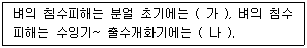
- (가): 작다, (나): 작아진다
- (가): 작다, (나): 커진다
- (가): 크다, (나): 작아진다
- (가): 크다, (나): 커진다
(정답률: 93%)
6. 식물호르몬인 사이토키닌의 주 생리작용은?
- 세포의 길이 생장
- 세포분열 촉진
- 발근 및 개화 촉진
- 과실의 후숙 촉진
(정답률: 74%)
7. 지베릴린에 대하여 옳게 설명한 것은?
- 제초제로 이용된다.
- 벼의 키다리병에서 유래한 물질이다.
- 지베릴린의 주요 합성물질은 NAA이다.
- 사과의 낙과방지에 특히 효과적이다.
(정답률: 84%)
8. 풍해의 기계적 장해에 해당하는 것은?
- 벼에서 수분 및 수정이 저해되어 불임립이 발생한다.
- 상처가 나면 호흡이 증대되어 체내의 양분소모가 증대된다.
- 증산이 커져서 식물이 건조해진다.
- 기공이 닫혀 광합성이 감퇴한다.
(정답률: 50%)
9. 다음 중 원산지가 한국으로 추정되는 작물로만 나열된 것은?
- 콩, 포도
- 인삼, 감
- 생강, 토란
- 벼, 동부
(정답률: 87%)
10. 농경의 발상지를 비옥한 해양지대라고 추정한 사람은?
- De Candolle
- G.Allen
- Vavilov
- P.Dettweiler
(정답률: 45%)
11. 다음에서 설명하는 것은?
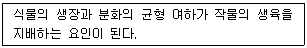
- crop growth rate
- carbohydrate nitrogen ratio
- top root ratio
- growth differentiation balance
(정답률: 84%)
12. 다음 중 2년생 작물로만 구성되어 있는 것은?
- 가을보리, 아스파라거스
- 가을밀, 사탕수수
- 옥수수, 호프
- 무, 사탕무
(정답률: 66%)
13. 파이토그롬(phytochrome)의 설명으로 틀린 것은?
- 광흡수색소로써 일장효과에 관여한다.
- Pr은 호광성종자의 발아를 억제한다.
- 파이토크롬은 적색광과 근적외광을 가역적으로 흡수할 수 있다.
- 굴광현상을 나타내는 호르몬의 일종으로 식물생육에 필수적인 물질이다.
(정답률: 60%)
14. 작물의 내동성에 관여하는 생리적 요인으로 옳은 것은?
- 원형질의 수분투과성이 작은 것이 세포내 결빙을 적게 하여 내동성을 증대시킨다.
- 세포내 수분함량이 높아서 자유수가 많아 지면 내동성이 증대된다.
- 세포 내 전분함량이 많으면 내동성이 증대된다.
- 원형질의 친수성콜로이드가 많으면 내동성이 증대된다.
(정답률: 53%)
15. 인공상토의 기능으로 거리가 먼 것은?
- 농약사용 및 비료시용 빈도를 줄인다.
- 작물이 필요할 때 흡수 이용할 수 있는 물을 보유한다.
- 뿌리와 배지 상부와의 가스 교환이 이루어지도록 한다.
- 작물을 지탱하는 기능을 한다.
(정답률: 53%)
16. 저장 환경조건을 가장 바르게 설명한 것은?
- 곡류는 저장습도가 낮을수록 좋지만, 과실이나 영양체는 저장 습도가 낮은 것이 좋지 않다.
- 굴저장하는 고구마는 밀폐하는 것이 통기가 되는 것보다 좋다.
- 고구마는 예냉이 필요하지만 과일은 예냉하면 저장 중 부패가 많다.
- 식용감자는 온도가 12~15도, 습도가 70~85%가 최적의 저장 조건이다.
(정답률: 63%)
17. 버널리제이션에 대하여 옳게 설명한 것은?
- 산소의 공급은 절대로 필요하다.
- 최아종자의 저온처리에는 암흑상태가 꼭 필요하다.
- 추파맥류는 고온처리를 해야 화성유도의 효과가 크다.
- 춘화처리 중에 건조시키면 효과가 상승한다.
(정답률: 57%)
18. 재배기간 동안 상토의 pH에 영향을 주는 주요 요인이 아닌 것은?
- 상토와 상토 구성분 자체에 포함된 석회석과 같은 식재
- 관개수의 알칼리도
- 재배기간 동안 사용된 비료의 산도/염기도
- 춘화처리 중에 건조시키면 효과가 상승한다.
(정답률: 82%)
19. 작물생장속도를 구하는 공식으로 옳은 것은?
- 엽면적 × 순동화율
- 엽면적율 × 상대생장율
- 엽면적지수 × 순동화율
- 비엽면적 × 상대생장율
(정답률: 74%)
20. 작물 유전의 돌연변이설을 주장한 사람은?
- De Vries
- Mendel
- 우장춘
- Darwin
(정답률: 70%)
2과목: 토양비옥도 및 관리
21. 토양은 농업활동으로 인해 pH가 내려가는 일이 많은데, 그 원인에 해당되지 않는 것은?
- 염화칼륨비료의 시용
- 식물에 의한 양분흡수
- 칼륨 등 치환성 염기의 용탈
- 석회 시용
(정답률: 63%)
22. 방선균의 생육에 가장 알맞은 토양 pH는?
- 2.0~3.0
- 3.0~4.0
- 4.0~5.0
- 6.0~7.0
(정답률: 52%)
23. 규소사면체층과 알루미늄팔면체층이 1:1로 결합된 광물은?
- smectite
- kaolin
- vermiculite
- illite
(정답률: 59%)
24. 암석의 기계적(물리적)인 풍화작용은 화학적 풍화작용을 촉진시킨다. 그 이유에 해당하지 않는 것은?
- 암석의 광물이 변성되므로
- 암석의 경도가 감소하므로
- 암석의 비중이 감소하므로
- 암석의 비표면적이 증가하므로
(정답률: 46%)
25. 다음 중 질소고정량이 가장 많은 두과작물은?
- 레드 클로버
- 베치
- 알팔파
- 콩
(정답률: 59%)
26. 다음 중 습도가 높은 대기 중에 토양을 놓아두었을 때, 대기로부터 토양에 흡착되는 수분으로써 –3.1MPa 이하의 퍼텐셜을 갖는 것은?
- 흡습수
- 모관수
- 중력수
- 지하수
(정답률: 77%)
27. 토양에서 가장 분해되기 힘든 물질은?
- 펙틴
- 헤미셀룰로오스
- 셀롤로오스
- 리그닌
(정답률: 76%)
28. 토양 중금속에 대한 설명으로 틀린 것은?
- 토양 중에서 알루미늄 중금속의 용해도는 토양의 pH가 낮을수록 감소한다.
- 중금속은 토양의 산화환원 조건에 따라서 용해도가 달라진다.
- 중금속은 공존하는 성분에 따라 흡수가 억제되기도 하고 증가되기도 한다.
- 수은이 과잉 축적되면 벼 뿌리의 신장이 현저하게 저해된다.
(정답률: 75%)
29. 토양 생성의 주요 인자에 해당하지 않는 것은?
- 기후
- 모재
- 경운
- 시간
(정답률: 90%)
30. 다음 중 ( )에 알맞은 내용은?
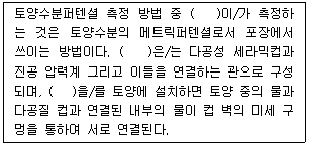
- 전기저항측정기
- tensiometer
- 중성자수분측정기
- TDR
(정답률: 64%)
31. Fe, Mn, Ca 등이 작토에서 용탈되어 결핍된 논토양을 무엇이라 하는가?
- 노후답
- 간척지답
- 습답
- 사력질답
(정답률: 79%)
32. 토양수분의 흡착력을 표시한 것 중 pF3.0을 설명한 내용으로 틀린 것은?
- -1bar에 해당됨
- -0.1MPa에 해당됨
- 물기둥의 높이가 1020cm에 해당됨
- 흡습계수에 해당됨
(정답률: 52%)
33. 토양수분을 알맞게 공급했는데도 잘 자라던 식물이 위조상태에 도달하였다. 그 원인으로 가장 적절한 것은?
- 뿌리 흡수기능의 이상
- 토양 구조의 부적합
- 지나친 수분흡수
- 작물의 증산억제
(정답률: 76%)
34. 화성암 중 중성암으로만 짝지어진 것은?
- 석영반암, 휘록암
- 안산암, 섬록암
- 현무암, 반려암
- 화강암, 섬록반암
(정답률: 76%)
35. 다음 중 질화작용과정으로 옳은 것은?
- NO2-→NH4+→NO3-
- NO3-→NH4+→NO2-
- NH4+→NO3-→NO2-
- NH4+→NO2-→NO3-
(정답률: 72%)
36. 신개간지의 일반적인 토양 화학 특성에 대한 설명으로 틀린 것은?
- 숙전에 비해 토양 유기물 함량이 낮다.
- 유효인산 함량이 낮다.
- 염기치환용량(CEC)이 낮은 편이다.
- 토양구조와 토양입단 안정도가 높다.
(정답률: 73%)
37. 가소성(Plasticity)을 설명한 것은?
- 토양이 건조하면 딱딱해지는 성질을 갖고, 건조한 토양입자는 반데르발스의 힘으로 결합된다.
- 건결성을 나타내는 수분과 소성을 나타내는 수분의 중간상태이다.
- 물체에 힘을 가했을 때 파괴됨이 없이 모양이 변화되고, 힘이 제거되어도 원형으로 돌아가지 않는 성질이다.
- 토양입자간의 견인력 및 연결력을 말하고, 토양입자 표면의 수막면의 장력에 의하여 잡아당기는 성질이다.
(정답률: 73%)
38. 다음 중 접시와 같은 모양이거나 수평배열의 토괴로 구성된 구조로 토양생성과정 중에 발달하거나 인위적인 요인에 의하여 만들어지며, 모재의 특성을 그대로 간직하고 있는 것은?
- 괴상구조
- 각주상구조
- 원주상구조
- 판상구조
(정답률: 79%)
39. Atterberg에 의해 제안된 토양의 소성지수를 정확하게 표현한 것은?
- 액성한계와 수축한계의 합(LL+SL)
- 액성한계와 수축한계의 차이(PL-SL)
- 액성한계와 소성한계의 합(LL+PL)
- 액성한계와 소성한계의 차이(LL-PL)
(정답률: 74%)
40. 다음 중 풍화에 가장 강한 1차광물은?
- 휘석
- 백운모
- 정장석
- 감람석
(정답률: 63%)
3과목: 유기농업개론
41. 다음에서 설명하는 것은?
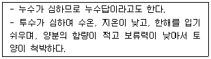
- 습답
- 사력질답
- 중점토답
- 퇴화염토답
(정답률: 61%)
42. 다음 중 （ ）에 알맞은 내용은?
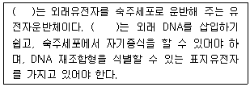
- 벡터
- 제한효소
- 리가아제
- 역전사효소
(정답률: 78%)
43. 다음에서 설명하는 것은?
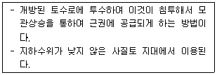
- 개거법
- 암거법
- 수반법
- 압입법
(정답률: 60%)
44. 친환경관련법상 유기축산물 축사조건으로 틀린 것은?
- 축사의 바닥은 부드러우면서도 미끄럽지 아니할 것
- 가금류의 축사는 짚, 톱밥, 모래 또는 아초와 같은 깔짚으로 채워진 건축공간이 제공되어야 할 것
- 자돈 및 육성돈은 반드시 케이지에서 사육할 것
- 산란계는 산란상자를 설치하여야 할 것
(정답률: 80%)
45. 다음 중 가축전염병 예방법에서 정하고 있는 제1종 가축전염병이 아닌 것은?
- 브루셀라병
- 돼지열병
- 구제역
- 고병원성조류인플루엔자
(정답률: 69%)
46. 친환경관련법상 병해충 관리를 위한 사용이 가능한 물질 중 사용가능 조건으로 “달팽이 관리용으로만 사용할 것만 해당함”에 해당하는 것은?
- 벡토나이트
- 규산나트륨
- 규조토
- 인산철
(정답률: 65%)
47. 다음 중 밭작물 재배 시 한해에 대한 재배 대책으로 틀린 것은?
- 뿌림골을 좁히거나 재식밀도를 성기게 한다.
- 뿌림골을 높게 한다.
- 질소의 다용을 피한다.
- 퇴비, 인산, 칼리를 증시한다.
(정답률: 45%)
48. 다음 중 (가), (나), (다)에 알맞은 내용은?
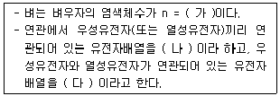
- (가) : 12, (나) : 상인, (다) : 상반
- (가) : 20, (나) : 상인, (다) : 상반
- (가) : 12, (나) : 상반, (다) : 상인
- (가) : 20, (나) : 상반, (다) : 상인
(정답률: 73%)
49. 다음 중 (가), (나)에 들어갈 내용은?
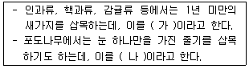
- 가 : 경지삽, 나 : 녹지삽
- 가 : 녹지삽, 나 : 단아삽
- 가 : 단아삽, 나 : 신초삽
- 가 : 신초삽, 나 : 단아삽
(정답률: 67%)
50. 다음 중 포식성 곤충에 해당하는 것은?
- 침파리
- 풀잠자리
- 고치벌
- 맵시벌
(정답률: 73%)
51. 다음 중 (가)에 알맞은 내용은?
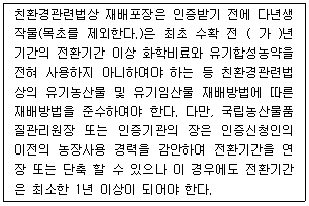
- 1
- 2
- 3
- 4
(정답률: 34%)
52. 다음 중 소의 질병을 관찰할 때 소의 생리적, 행동적 특성으로 틀린 것은?
- 중독 또는 신경성 장해로 질병이 발생하면 과도하게 되새김질을 한다.
- 눈에 윤기가 없고 눈물이나 눈곱이 보이며 우묵하게 들어가 있으면 이상이 있는 것이다.
- 건강에 이상이 있으면 콧등이 건조하고 열이 난다.
- 기생충성 질병, 중독 등의 경우에는 점막이 창백해진다.
(정답률: 56%)
53. 다음에서 설명하는 내용은?
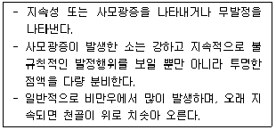
- 질탈
- 자궁탈
- 난소낭종
- 후산정체
(정답률: 64%)
54. 친환경관련법상 유기배합사료제조용 물질 중 사용가능 조건이 “양식하지 않은 것일 것”에 해당하는 것은?
- 어골회
- 어분
- 패분
- 우지
(정답률: 59%)
55. 다음에서 설명하는 것은?
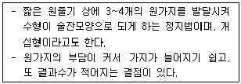
- 주간형
- 변칙주간형
- 울타리형
- 배상형
(정답률: 77%)
56. 다음 중 사료에너지를 구분할 때 총에너지에서 분으로 소실된 에너지를 뺀 에너지를 의미하는 것은?
- 총에너지
- 대사에너지
- 정미에너지
- 가소화에너지
(정답률: 45%)
57. 다음 중 박과 채소류의 접목에 대한 설명으로 틀린 것은?
- 당도가 증가한다.
- 토양전염성 병의 발생을 억제한다.
- 저온, 고온 등 불량환경에 대한 내성이 증대된다.
- 과습에 잘 견딘다.
(정답률: 68%)
58. 다음 중 퇴비환적의 이점에 대한 설명으로 틀린 것은?
- 퇴비더미의 바깥쪽에 위치한 원료가 중심부로 이동되도록 한다.
- 유기물 분해가 적절히 골고루 일어나도록 도와준다.
- 퇴비화 과정 중에 산소를 공급함으로써 혐기상태를 만들어 주고 퇴비 제조과정을 빠르게 진행시킨다.
- 퇴비화 과정의 진행 정도를 확인할 수 있다.
(정답률: 69%)
59. 다음 중 다년생 논잡초로만 나열된 것은?
- 강피, 돌피
- 물피, 알방동사니
- 여뀌, 자귀풀
- 가래, 벗풀
(정답률: 53%)
60. 다음에서 설명하는 것은?
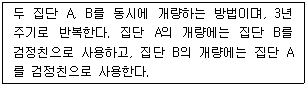
- 상호순환선발
- 합성품종
- 계통집단선발
- 여교배육종
(정답률: 51%)
4과목: 유기식품 가공.유통론
61. . 마요네즈 제조 시 난황의 주요 역할은?
- 팽창작용
- 유화작용
- 응고작용
- 기포형성작용
(정답률: 76%)
62. 방사성 물질의 식품오염에 대한 설명으로 옳은 것은?
- 빗물, 수돗물, 우물물 중 방사성 물질의 오염을 받기 쉬운 것은 수돗물이다.
- 어패류의 경우 방사성 물질이 먹이사슬을 통해 생물 농축되지 않는다.
- 인체에 가장 피해를 많이 주는 것은 반감기가 짧은 물질이다.
- 식품오염과 관련된 핵종으로 위생상 문제가 되는 것은 90Sr, 137Cs, 131I 등이다.
(정답률: 63%)
63. 식중독의 원인에 대한 설명 중 틀린 것은?
- 빵이나 음료보다 식육과 어패류가 부패를 잘 일으킨다.
- 식중독의 주된 원인으로 냉장 및 냉동보관온도 미준수가 가장 높다.
- 과일이나 채소를 통해서는 식중독이 발생되지 않는다.
- 조리온도와 조리시간을 충분히 하지 못할 경우 식중독이 발생할 수 있다.
(정답률: 83%)
64. GMO에 대한 설명으로 틀린 것은?
- 생물의 유전자 중 유용한 유전자만을 취하여 다른 식물체의 유전자와 결합시키는 등의 유전자재조합 기술을 활용한다.
- 유전자재조합식품은 유전자재조합기술을 활용하여 재배, 육성된 농축수산물 등을 원료로 하여 제조, 가공한 식품이다.
- 전세계적으로 옥수수의 개발 품목수가 가장 많다.
- 유전자변형농산물의 생산, 유통과정 중 비의도적 혼입을 허용하지 않으므로, 별도의 혼입허용치는 설정되어 있지 않다.
(정답률: 70%)
65. 농산물의 유통환경 중 거시환경에 해당하는 것은?
- 농기업
- 원료공급자
- 경쟁사
- 규제법률
(정답률: 67%)
66. 광산폐수에 용출되며 인체에 침입하여 골다공증을 일으키는 중금속은?
- 납
- 비소
- 수은
- 카드뮴
(정답률: 41%)
67. 과일, 채소류음료에 대한 설명으로 틀린 것은?
- 과, 채음료는 과, 채즙 5% 이상 함유한 상품이다.
- 과일즙은 과일즙을 혼합하여 50% 이하로 농축한 것을 말한다.
- 과일주스는 과일을 압착, 분쇄, 착즙 등 물리적으로 가공하여 얻은 과일즙을 말한다.
- 과일주스는 95% 이상의 과일즙에 식품 또는 식품첨가물을 가한 것을 말한다.
(정답률: 52%)
68. 다음 중 마케팅믹스(4P)에 포함되지 않는 것은?
- 전략
- 제품
- 가격
- 유통
(정답률: 40%)
69. 유기가공식품의 구비조건이 아닌 것은?
- 유기식품의 가공 및 취급 과정에서 전리방사선을 사용할 수 없다.
- 추출을 위하여 식물성 및 동물성 유지, 식초, 이산화탄소, 질소를 사용할 수 없다.
- 여과를 위하여 석면을 포함하여 식품 및 환경에 부정적 영향을 미칠 수 있는 물질이나 기술을 사용할 수 없다.
- 저장을 위하여 공기, 온도, 습도 등 환경을 조절할 수 있으며, 건조하여 저장할 수 있다.
(정답률: 77%)
70. 식품가공 공장에서 지켜야 할 사항으로 옳은 것은?
- 가공되지 않은 원료식품과 가공된 식품이 접촉하지 않도록 해야 한다.
- 모든 도구는 세제로 세척한 후에 사용한다.
- 외부로부터 오는 내방자는 손과 신발을 물로 세척한 후에 들어오도록 한다.
- 24시간 이내에 가공할 원료는 실온에서 저장한다.
(정답률: 50%)
71. . 수박 한통의 유통단계별 가격은 농가수취가격 5000원, 위탁상가격 6000원, 도매가격 6500원, 소비자가격 8500원이다. 수박 총 거래량이 100개라고 하면, 유통마진의 가치(VMM)은 얼마인가?
- 350000원
- 200000원
- 150000원
- 100000원
(정답률: 73%)
72. 100도의 물 1g을 냉동하여 0도의 얼음으로 만들 경우 냉동부하는 얼마인가? (단, 에너지 손실은 없다고 가정하며 물의비열은 1cal/g℃, 수증기 잠열 540cal/g, 얼음의 잠열 80cal/g이다.)
- 80cal
- 100cal
- 180cal
- 720cal
(정답률: 54%)
73. 구토 및 콜레라 증세를 보이며 간장과 신장의 침해를 보이는 맹독성의 버섯독은?
- 뉴린
- 무스카린
- 아마니타톡신
- 콜린
(정답률: 73%)
74. 배, 감귤의 농산물 표준거래 단위 구성은?
- 5kg, 10kg
- 5kg, 7.5kg, 10kg, 15kg
- 5kg, 8kg, 10kg
- 5kg, 10kg, 15kg, 20kg
(정답률: 75%)
75. 과일이나 채소의 신선도 유지를 위한 저장방법 중 가스치환포장방법은 공기를 주로 어떤 성분으로 바꾸어 포장하는가?
- 산소, 질소
- 산소, 일산화탄소
- 일산화탄소, 헬륨
- 질소, 이산화탄소
(정답률: 84%)
76. 치즈 제조 시 사용하는 렌넷에 포함되어 있는 렌닌의 기능은?
- 카파 카제인(k-casein)의 분해에 의한 카제인(casein) 안정성 파괴
- 알파 카제인(a-casein)의 분해에 의한 카제인(casein) 안정성 파괴
- 베타 락토글로뷸린(b-lactoglobulin)의 분해에 의한 유청단백질 안정성 파괴
- 알파 락트알부민(a-lactalbumin) 분해에 의한 유청단백질 안정성 파괴
(정답률: 62%)
77. 유기식품가공시설에서 유해생물을 차단하는 구조적 방식이 아닌 것은?
- 농약살포
- 출입구 에어커튼 설치
- 감시공간의 확보
- 유해생물에 부적합 환경 조성
(정답률: 83%)
78. 청과물의 호흡속도를 줄여서 품질을 유지하는 가장 좋은 방법은?
- 예냉
- 건조
- 선별
- 세척
(정답률: 83%)
79. 천연첨가물에 대한 설명으로 틀린 것은?
- 동물, 식물 등 생물자원 등을 소재로 한다.
- 발표법을 거쳐 얻어진 효소도 포함된다.
- 천연의 광물, 불용성 물질 등은 포함되지 않는다.
- 효소반응에 의해 얻어지는 물질 등도 포함된다.
(정답률: 75%)
80. 완만동결(slow freezing)의 특징이 아닌 것은?
- 최대빙결정생성대 통과시간 40분 이상 소요
- 작은 얼음결정 생성됨
- 세포외로 수분 이동과 빙결정 성장 있음
- 생성된 빙결정 크기는 80ug(마이크로그램) 이상임
(정답률: 49%)
5과목: 유기농업관련 규정
81. 친환경 관련법상 공시등기관의 지정취소 등에 관한 사항으로 내용이 틀린 것은?
- 거짓이나 그 밖의 부정한 방법으로 지정을 받은 경우 그 지정을 취소하여야 한다.
- 공시등기관이 파산, 폐업 등으로 인하여 공시등 업무를 수행할 수 없는 경우 그 지정을 취소하여야 한다.
- 업무정지 명령을 위반하여 정지기간 중에 공시등의 업무를 한 경우 그 지정을 취소하여야 한다.
- 정당한 사유 없이 3개월 이상 계속하여 공시등 업무를 하지 아니한 경우 그 지정을 취소하여야 한다.
(정답률: 66%)
82. 친환경관련법상에서 “휴약기간”이란?
- 친환경농업을 실천하는 자가 경종과 축산을 겸업하면서 각각의 부산물을 작물재배 및 가축사육에 활용하고, 경종작물의 퇴비소요량에 맞게 가축사유 마리 수를 유지하는 기간을 말한다.
- 사육되는 가축에 대하여 그 생산물이 식용으로 사용하기 전에 동물용의약품의 사용을 제한하는 일정기간을 말한다.
- 원유를 소비자가 안전하게 음용할 수 있도록 단순살균 처리한 기간을 말한다.
- 항생제, 합성항균제 및 호르몬 등 동물의 약품의 인위적인 사용으로 인하여 동물에 잔류되거나 또는 농약, 유해중금속 등 환경적인 요소에 의한 자연적인 오염으로 인하여 축산물 내에 잔류되는 기간을 말한다.
(정답률: 78%)
83. 친환경관련법상 비식용유기가공품 유기사료 가공방법에 대한 내용으로 틀린 것은?
- 기계적, 물리적, 생물학적 방법을 이용하되 모든 원료와 최종생산물의 유기적 순수성이 유지되도록 하여야 한다. 원료의 속성을 화학적으로 변형시키거나 반응시키는 일체의 첨가물, 보조제, 그 밖의 물질은 사용할 수 없다.
- 유기사료의 가공 및 취급 과정에서 전리방사선을 사용할 수 없으며, 전리 방사선을 조사한 물질을 원료로 사용할 수 없다.
- 추출을 위하여 물, 에탄올, 식물성 및 동물성 유지, 식초, 이산화탄소, 질소를 사용할 수 없다.
- 여과를 위하여 석면을 포함하여 생산물 및 환경에 부정적 영향을 미칠 수 있는 물질이나 기술을 사용할 수 없다.
(정답률: 78%)
84. 유기식품의 생산, 가공, 표시, 유통에 관한 Codex 가이드라인에서 규정한 유기농산물 생산 시 식물 해충 및 질병관리를 위한 물질들 중 인증기관 또는 인증권자의 승인을 받아야만 하는 물질은?
- 칼륨 비누
- 웅성 불임곤충
- 페로몬(유인물질) 제제
- 약초 및 생물역학적 제제
(정답률: 55%)
85. 친환경관련법상 인증품 또는 공시등을받은 유기농어업자재에 인증 또는 공시등을 받은 내용과 다르게 표시를 한 자는 어떤 벌칙을 받는가?
- 6개월 이하의 징역 또는 1천만원 이하의 벌금에 처한다.
- 1년 이하의 징역 또는 1천만원 이하의 벌금에 처한다.
- 2년 이하의 징역 또는 3천만원 이하의 벌금에 처한다.
- 3년 이하의 징역 또는 3천만원 이하의 벌금에 처한다.
(정답률: 41%)
86. 친환경관련법상 “친환경농수산물”에 해당되지 않는 것은?
- GMO
- 유기농수산물
- 무항생제축산물
- 활성처리제 비사용 수산물
(정답률: 80%)
87. 유기식품의 생산, 가공, 표시, 유통에 관한 Codex 가이드라인에서 정하고 있는 가축의 축사 및 방목 조건으로 틀린 것은?
- 가금은 개방조건에서 사육해야 하고 기후조건에 따라 노천지에 접근이 가능해야 한다.
- 관할기관의 승인 없이 송아지를 개별 박스형 우리에 사육하는 것은 허용하지 않는다.
- 축사 바닥은 청결을 유지하기 위해 전체를 격자형 구조물로 하되, 평평함을 유지시켜야 한다.
- 토끼는 케이지에서 사육하는 것은 허용되지 않는다.
(정답률: 56%)
88. 다음 중 ( ) 알맞은 내용은?
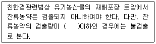
- 0.01ppm
- 0.02ppm
- 0.03ppm
- 0.⑤ppm
(정답률: 80%)
89. 친환경관련법상 인증취소 등 행정처분의 기준 및 절차에서 개별기준의 행정처분기준중 “해당 제품의 판매 금지”에 해당하는 위반사항은?
- 인증신청서, 첨부서류, 인증심사에 필요한 서류를 거짓으로 작성하여 인증을 받은 경우
- 부정한 방법으로 인증을 받은 경우
- 경영 관련 자료를 기록, 보관하지 않은 경우 또는 거짓으로 기록하는 경우
- 인증품이 아닌 제품을 인증품으로 표시 또는 광고한 것으로 인정되는 때
(정답률: 69%)
90. 친환경관련법상 무항생제축산물의 동물복지 및 질병관리 구비조건에 관한 내용으로 틀린 것은?
- 호르몬제는 어떠한 경우에도 사용할 수 없다.
- 가축의 질병은 가축의 품종과 계통의 적절한 선택과 같은 조치를 통하여 예방하여야 한다.
- 가축의 기생충 감염 예방을 위하여 구충제 사용과 가축전염병이 발생하거나 퍼지는 것을 막기 위한 예방백신을 사용할 수 있다.
- 법정전염병의 발생이 우려되거나 긴급한 방역조치가 필요한 경우 우선적으로 필요한 질병예방 조치를 취할 수 있다.
(정답률: 52%)
91. 다음은 친환경관련법상 인증기관에 대한 행정처분기준에 관한 설명이다. ( )에 알맞은 내용은?
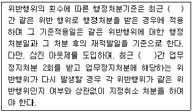
- 1년
- 3년
- 5년
- 7년
(정답률: 57%)
92. 친환경관련법상 유기표시문자에 대한 내용으로 틀린 것은?
- 비식용유기가공품 표시 문자: “식품”이 들어가는 단어를 사용한다.
- 유기가공식품 표시 문자: 유기가공식품, 유기농 또는 유기식품
- 유기가공식품 표시 문자: 유기농ㅇㅇ 또는 유기ㅇㅇ
- 유기농축산물 표시 문자: 유기농산물, 유기축산물, 유기식품, 유기재배농산물 또는 유기농
(정답률: 68%)
93. 친환경관련법상 무농약농산물 등의 인증기준에서 무농약농산물 재배방법에 대한 내용으로 틀린 것은?
- 유기합성농약을 사용하지 않아야 한다.
- 장기간의 적절한 윤작계획에 따른 두과작물, 녹비작물, 심근성작물을 재배하도록 권장한다.
- 화학비료는 농촌진흥청장, 농업기술원장 또는 농업기술센터소장이 재배포장별로 권장하는 성분량의 2분의 1 이하를 사용하여야 한다.
- 가축분뇨 퇴, 액비를 사용하는 경우에는 완전히 부숙시켜서 사용하여야 하며, 이의 과다한 사용, 유실 및 용탈 등으로 인하여 환경오염을 유발하지 아니하여야 한다.
(정답률: 77%)
94. 유기식품의 생산, 가공, 표시, 유통에 관한 Codex 가이드라인에 의한 유전자 공학, 변형기법에 해당되지 않는 것은?
- 캡슐화
- DNA 재조합
- 잡종교배
- 세포융합
(정답률: 67%)
95. 친환경관련법상 일반농가가 유기축산으로 전환할 때, 유기가축이 아닌 가축을 유기 농장으로 입식하여 유기축산물을 생산, 판매하려는 경우에는 전환기간 이상을 유기축산물 인증기준에 따라 사육하는데, 내용이 틀린 것은?
- 한우(식육): 입식 후 출하시까지(최소 12개월)
- 오리(식육): 입식 후 출하시까지(최소 3주)
- 사슴(녹용): 녹용 성장기간 4개월
- 돼지(식육): 입식 후 출하시까지(최소 5개월)
(정답률: 44%)
96. 친환경관련법상에 대한 내용으로 ( )에 알맞은 내용은?(관련 규정 개정전 문제로 여기서는 기존 정답인 1번을 누르면 정답 처리됩니다. 자세한 내용은 해설을 참고하세요.)
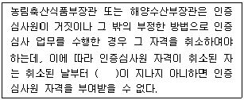
- 2년
- 3년
- 5년
- 7년
(정답률: 48%)
97. 친환경관련법상 유기식품등의 유기표시기준에서 작도법에 대한 내용으로 틀린 것은?
- 표시 도형의 가로의 길이(사각형의 왼쪽끝과 오른쪽 끝의 폭 : W)를 기준으로 세로의 길이는 0.95×W의 비율로 한다.
- 표시 도형의 흰색 모양과 바깥 테두리(좌, 우 및 상단부 부분에만 해당한다)의 간격은 0.1×W로 한다.
- 표시 도형의 흰색 모양 하단부 좌측 태극의 시작점은 상단부에서 0.90×W 아래가 되는 지점으로 하고, 우측 태극의 끝점은 상단부에서 0.70×W 아래가 되는 지점으로 한다.
- 표시 도형의 국문 및 영문 모두 글자의 활자체는고딕체로 하고, 글자 크기는 표시 도형의 크기에 따라 조정한다.
(정답률: 68%)
98. 친환경관련법상에서 토양개량과 작물생육을 위하여 사용가능한 물질 중 사용가능 조건이 고온발효로 50도 이상에서 7일 이상 발효된 것에 해당해야 사용이 가능한 물질은?
- 사람의 배설물
- 대두박
- 혈분
- 골분
(정답률: 77%)
99. 유기식품의 생산, 가공, 표시, 유통에 관한 Codex 가이드라인에 의하면 농산물을 수입하여 유통할 때 수입자는 몇 년 이상 수출국의 관할기과이 발급한 인증서를 보관하여야 하는가?
- 6개월
- 2년
- 3년
- 5년
(정답률: 55%)
100. 다음의 식은 친환경관련법상 유기가 공식품에 유기원료 비율의 계산법이다. 내용이 틀린 것은?(관련 규정 개정전 문제로 여기서는 기존 정답인 2번을 누르면 정답 처리됩니다. 자세한 내용은 해설을 참고하세요.)
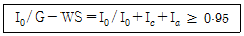
- G : 제품(포장재, 용기 제외)의 중량의 중량(G= I0+Ic+Ia+WS)
- WS : I0(유기원료의 중량)/ 값 d(비유기 원료의 중량)
- I0 : 유기원료(유기농산물+유기축산물+유기가공식품)의 중량
- I0 : 비유기원료(유기식품인증 표시가 없는 원료)의 중량
(정답률: 52%)